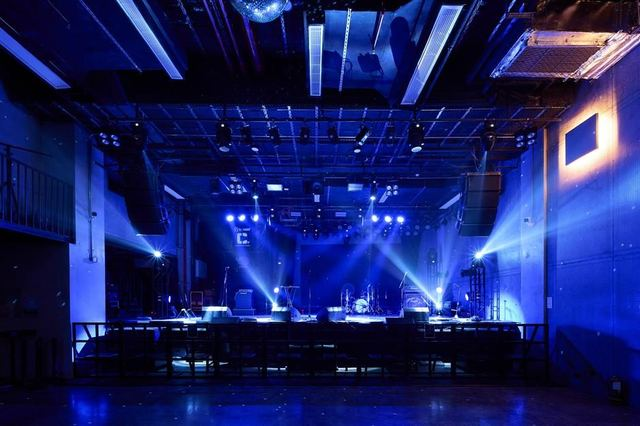

Jazz club · Jazz concert club · Xuhui
JZ Club JZ Club爵士酒吧（衡山8号）
Jazz, fusion and big-band acts play at Hengshan 8. Reserve a table; set times are unverified.
about CNY 173per person
CheckedRatings readAmap (opens Amap, or its website, in a new tab)
Nightlife picks: picked for overall quality from named, dated reviews and lists (2024 to 2026). Where a dated event or a recent review was found it shows as “Evidence it is open”; where none shows, confirm the venue is trading before you go. These are music-led clubs and live venues; bottle-service clubs were reviewed and left out. Venues open, close and move often: check the venue’s own WeChat or Instagram for the night you plan.
6 places
Jazz club · Jazz concert club · Xuhui
Jazz, fusion and big-band acts play at Hengshan 8. Reserve a table; set times are unverified.
about CNY 173per person

Live house · Independent band concert rooms · Changning
Shows are listed nightly from 25 to 29 Nov, but the two halls ticket separately: confirm your room.
CNY 0 to 268Single tickets for late November

Live house · Two-room concert venue · Putuo
Kings of Convenience play Tue 24 Nov, and ticket site Damai accepts foreign passports for that show.
CNY 108 to 420Single tickets for late November
Live house · Touring-band concert room · Changning
Praised for its sound. Fri 27 Nov is a heavy-music night: CNY 219 presale, CNY 239 at the door.
CNY 21927 Nov presale

Jazz club · Seated jazz concert club · Huangpu
Seated jazz starts at 19:30 each night from 25 to 29 Nov. Confirm the per-person price and seating.
CNY 158 to 2,588Pekka displayed
Jazz club · Jazz jams and live bands · Putuo
Musicians' jazz jams in a basement beneath Star@, open Wed to Sun from 20:00. Confirm the entrance first.
about CNY 77per person